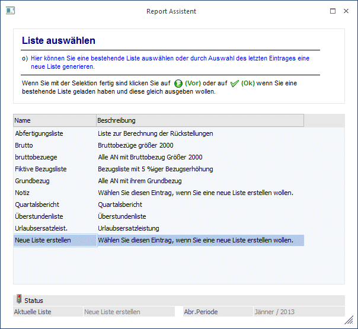
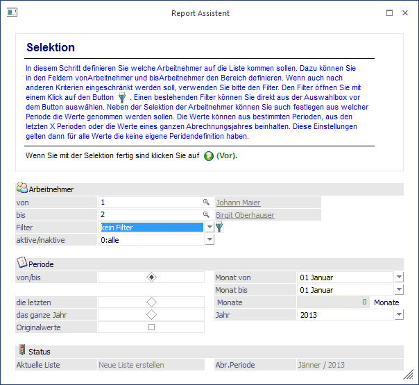
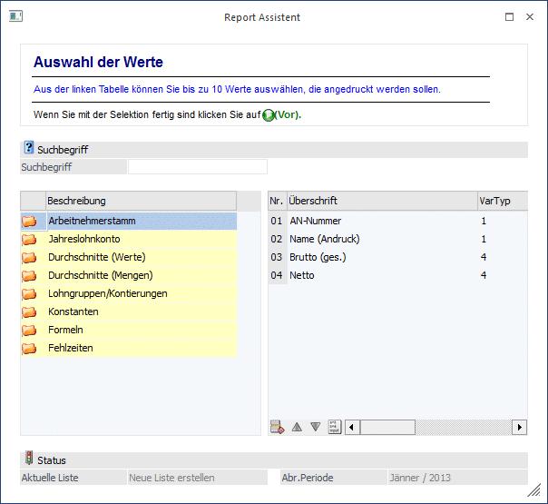
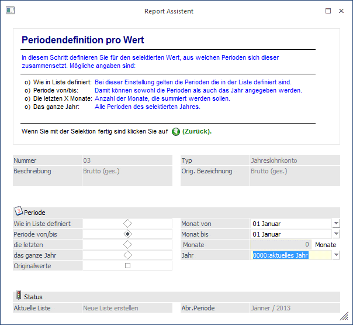
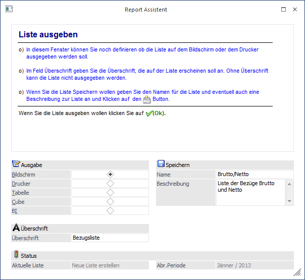
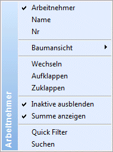

Mit dem Report Assistenten, der über den Menüpunkt
1 Auswertungen
1 Report Assistent
aufgerufen wird, können frei definierbare Listen ausgegeben werden, wobei hier bestimmte Werte wie
ü Arbeitnehmer-Stamminformationen
ü Arbeitnehmer-Konstanten
ü Abrechnungswerte aus dem Jahreslohnkonto
ü Durchschnittswerte
ü Lohngruppen
ü Fehlzeiten
ausgewertet werden können.
Hinweis:
Für diese Listen können/müssen Objektberechtigungen vergeben werden. Der Benutzer der die Liste erstellt erhält automatisch die Objektberechtigung "Ersteller" für diese Liste. Wenn auch andere Benutzer auf diese Liste zugreifen können sollen, müssen die Objektberechtigungen entsprechend verteilt werden.
Pro Auswertung können beliebig viele Werte ausgegeben werden. Die Auswertung ist in einen Assistenten verpackt, der durch die einzelnen Eingabemöglichkeiten führt:
1. Schritt
Im ersten Schritt kann zwischen mehreren Aktionen unterschieden werden:
ü Es kann eine neue Liste erstellt werden.
ü Es kann eine bestehende Liste bearbeitet werden.
ü Es kann eine bestehende Liste ausgegeben werden.
ü Eine bestehende Liste kann gelöscht werden.
ü Eine bestehende Liste kann exportiert werden.
ü Eine neue Liste kann importiert werden.
Wenn eine bestehende Liste ausgegeben werden soll, so reicht es, wenn auf den gewünschten Eintrag ein Doppelklick gemacht wird. Danach kann der OK-Button angeklickt werden und die Liste wird ausgegeben. Ist noch keine Liste definiert bzw. soll eine neue Liste erstellt werden, so muss der Eintrag "Neue Liste erstellen" gewählt werden. Wenn eine Liste gelöscht werden soll, so muss der Löschen-Button angeklickt werden. Die Liste wird aber erst nach einer Sicherheitsabfrage gelöscht. Wenn eine bestehende Liste bearbeitet werden soll, so muss der gewünschte Eintrag aktiviert werden. Durch Anklicken des VOR-Buttons oder durch einen Doppelklick auf die gewünschte Liste gelangt man zum 2. Schritt.
Im rechten unteren Bereich des Fensters wird im Feld
Ø Abr. Periode:
immer die aktuelle Abrechnungsperiode angezeigt.

Ø Exportieren
Durch Anklicken des Exportieren-Buttons kann eine bestehende Liste mit allen dazugehörigen Informationen (also dem Listbild und ggf. hinterlegten Formeln) in eine XML-Datei exportiert werden. Die Datei kann dann z.B. auf eine andere Installation transferiert werden.
Ø Importieren
Mit dem Importieren-Button können Reports, die einmal als XML-Datei gespeichert wurden, importiert werden. Wenn eine Liste importiert wird, die bereits vorhanden ist, wird eine entsprechende Meldung ausgegeben, wobei entschieden werden kann, ob die bestehende Liste überschrieben werden soll oder nicht. Das gleiche gilt auch, wenn in der Liste Formeln enthalten sind, die bereits vorhanden sind.
2. Schritt
Im zweiten Schritt kann gewählt werden, welche Datenbereiche bei der Liste ausgewertet werden sollen. Dabei stehen folgende Optionen zur Verfügung:

Ø Arbeitnehmer von - bis
Einschränkung der AN, die ausgewertet werden sollen. Wie die AN-Nummer eingegeben werden kann, dazu gibt es mehrere Möglichkeiten. Details dazu entnehmen Sie bitte dem Kapitel Aufruf einer AN-Nummer.
Ø Filter
Aus der Auswahllistbox kann ein bestehender Filter ausgewählt werden, der die Selektion bestimmen kann. Durch Anklicken des Filter-Buttons kann auch ein neuer Filter definiert werden.
Ø aktive/inaktive
Aus der Auswahllistbox kann gewählt werden, welche AN ausgewertet werden sollen, wobei folgende Optionen zur Verfügung stehen:
ü 0:alle
Es werden alle AN
angezeigt.
ü 1:nur inaktive
Es werden nur
die AN ausgewertet, bei denen die Option "Inaktiv" gesetzt ist.
ü 2:nur aktive
Es werden nur
aktive Arbeitnehmer ausgewertet.
Ø Periode
Über die Periodeneinstellung kann gesteuert werden, für welche Periode die Liste ausgegeben werden soll.
Ø von/bis
Wenn diese Option eingestellt ist, dann können in den Feldern
Ø Monat von
Ø Monat bis
die Perioden (Monate) eingestellt werden, die ausgewertet werden sollen. Zusätzlich dazu kann das Jahr eingestellt werden. Neben allen Jahren, für die es Abrechnungen gibt, kann auch die Option "0000:aktuelles Jahr" gewählt werden.
Ø die letzten Monate
Bei dieser Option kann die Anzahl der Monate eingestellt werden, die ausgewertet werden sollen, wobei die aktuelle Periode nicht mitgezählt wird.
Ø das ganze Jahr
Mit dieser Option erfolgt die Auswertung über das gesamte Jahr, welches in der Auswahllistbox gewählt werden kann.
Ø Originalwerte
Wird diese Option aktiviert, werden bei der Auswertung die Werte herangezogen, die ursprünglich abgerechnet wurden. D.h. eventl. in Folgemonaten durchgeführte Rollungen werden in der Auswertung nicht berücksichtigt.
Hinweis:
Für Werte der Sozialversicherung kann die Checkbox "Originalwerte" nicht herangezogen werden, da die Originalwerte durch Einführung des mBGM's nicht mehr ermittelt werden können (der mBGM erfordert ein komplettes Storno der Vorperioden und eine gänzliche Neuübermittlung).
Beispiel:
Im Jänner wird ein AN mit einem Bruttobezug von € 1.000,- abgerechnet.
Im Februar wird für diesen AN eine Rollung durchgeführt, wobei der Jännerwert auf € 1.100,- erhöht wird.
Im März wird für diesen AN nochmals eine Rollung durchgeführt, wobei der Jännerwert auf € 1.200,- erhöht wird.
Wird nun eine Auswertung für den Jänner mit Originalwerten ausgegeben wird, dann wird beim Brutto der Wert von € 1.000,- angezeigt.
Wird hingegen für den Jänner eine Auswertung ohne Option "Originalwerte" ausgegeben, dann wird unter Brutto der Wert von € 1.200,- angezeigt.
Durch Anklicken des VOR-Button gelangt man in den 3. Schritt. Durch Anklicken des Zurück-Buttons können bereits vorgenommene Einstellungen verändert werden. Durch Drücken der ESC-Taste wird das Fenster geschlossen.
3. Schritt
Im dritten Schritt kann entschieden werden, welche Daten ausgewertet werden sollen. Dabei stehen folgende Datenbereiche zur Verfügung:
ü Arbeitnehmerstamm
Es kann auf
alle Werte aus dem AN-Stamm zugegriffen werden.
ü Jahreslohnkonto
Es kann auf
alle Werte aus dem Jahreslohnkonto wie Brutto, Netto, SV, LST, Freibeträge,
steuerfreie Bezüge § 68 etc. zugegriffen werden.
ü Durchschnitte (Werte /
Mengen)
Es kann auf alle angelegten Durchschnitte zugegriffen werden. Es ist
darauf zu achten, dass ggf. Durchschnitte nicht bei allen AN vorhanden sind.
ü Lohngruppen/Kontierung
Es kann
auf alle Lohngruppenwerte zugegriffen werden. Auch hier ist wieder darauf zu
achten, dass nicht unbedingt alle Lohngruppen bei allen AN gefüllt sind.
ü Konstanten
Es kann auf die bei
AN hinterlegte Konstanten zugegriffen werden. Hier ist darauf zu achten, dass
immer der letztgültige Wert herangezogen wird (sofern die Auswertung über das
ganze Jahr gemacht wird).
ü Formeln
Über Formeln, die über
den Menüpunkt Stammdaten/Lohnarten/Formelstamm angelegt werden können, können
beliebige Berechnungen durchgeführt werden (z.B. Durchschnittsberechnung,
Sonderzahlungsanteil etc.).
ü Fehlzeiten
Damit können auch
auf die Fehlzeiten zugegriffen werden, die für die AN erfasst wurden.

Das Fenster ist in zwei Tabellen geteilt. Auf der linken Seite werden alle Datenbereiche und die darin enthaltenen Datenfelder angezeigt. Darüber gibt es das Feld "Suchbegriff". Wird in diesem Feld ein Suchbegriff eingetragen und durch Drücken der TAB- oder der RETURN-Taste bestätigt, wird eine Volltextsuche durchgeführt und alle entsprechenden Datenfelder in der Tabelle angezeigt. Die Felder, die in der Liste angedruckt werden sollen, müssen durch einen Doppelklick von der linken in die rechte Tabelle übernommen werden. Mit den Hinauf- und Hinunter-Buttons kann die Reihenfolge der Datenfelder verändert werden. Durch Anklicken des Entfernen-Buttons können Datenfelder, die nicht mehr benötigt werden, wieder gelöscht werden.
In der rechten Tabelle werden folgende Informationen angezeigt, die ggf. auch noch verändert werden können:
Ø Nr.
Nummer des Eintrages in der Liste. Dieser Werte wird fix vorgegeben und kann nicht verändert werden.
Ø Überschrift
In diesem Feld wird der Name der ausgewählten Variable angezeigt. Für den Andruck auf der Liste kann dieser Wert aber überschrieben werden.
Ø Breite
Hier wird die Länge der Variable (max. Anzahl von Stellen) angezeigt, mit der die Variable ausgedruckt wird. Dieser Wert kann bei Bedarf verändert werden.
Ø Orig.Besch.
Hier wird die Original-Beschriftung der einzelnen Variablen angezeigt. Damit kann - wenn die Überschriften manuell geändert wurden - später nachvollzogen werden, welche Variablen bzw. Werte angedruckt wurden.
Ø Herkunft
In dieser Spalte wird angezeigt, aus welchem Datenbereich (Arbeitnehmerstamm, Jahreslohnkonto, Formel, etc.) der Wert angedruckt werden soll. Damit läßt sich leichter nachvollziehen, welche Variable in der Liste verwendet wird.
Wenn es sich bei dem Eintrag um einen Wert (Jahreslohnkonto, Konstante etc.) handelt, dann kann durch einen Doppelklick auf den Eintrag nochmals die Periodenauswahl verändert werden:

Auf der rechten Seite wird angezeigt, welche Variable gerade bearbeitet wird. Auf der linken Seite kann eingestellt werden, für welche Periode der ausgewählte Wert berechnet werden soll. Hier gibt es folgende Möglichkeiten, wobei der Standardvorschlag auf "Wie in Liste definiert" steht:
Ø Wie in Liste definiert
Mit dieser Option werden die Einstellungen aus der Listendefinition übernommen.
Ø Periode von/bis
Wenn diese Option eingestellt ist, dann können in den Feldern
Ø Monat von
Ø Monat bis
die Perioden (Monate) eingestellt werden, die ausgewertet werden sollen. Zusätzlich dazu kann das Jahr eingestellt werden. Neben allen Jahren, für die es Abrechnungen gibt, kann auch die Option "0000:aktuelles Jahr" gewählt werden.
Ø die letzten Monate
Bei dieser Option kann die Anzahl der Monate eingestellt werden, die ausgewertet werden sollen, wobei die aktuelle Periode nicht mitgezählt wird.
Ø das ganze Jahr
Mit dieser Option erfolgt die Auswertung über das gesamte Jahr, welches in der Auswahllistbox gewählt werden kann.
Ø Originalwerte
Wird diese Option aktiviert, werden bei der Auswertung die Werte herangezogen, die ursprünglich abgerechnet wurden. D.h. eventl. in Folgemonaten durchgeführte Rollungen werden in der Auswertung nicht berücksichtigt.
Durch Anklicken des Zurück-Buttons wird in die Variablenauswahl gewechselt. Wurde bei einer Variable die Periodenauswahl geändert, so wird das in der letzten Spalte der Tabelle durch Anzeige des Symbols dargestellt.
Durch Anklicken des VOR-Buttons gelangt man in den 5. und letzten Schritt. Durch Anklicken des Zurück-Buttons können bereits vorgenommene Einstellungen nochmals verändert werden. Der OK-Button, mit dem die Ausgabe der Liste gestartet wird, steht nur dann zur Verfügung, wenn eine bereits vorhandene Liste editiert wird. Durch Drücken der ESC-Taste wird das Fenster geschlossen.
4. Schritt
Im vierten und letzten Schritt kann die Liste gespeichert und ausgegeben werden. Über die Ausgabe kann gesteuert werden, ob die Liste am Bildschirm, am Drucker in eine Tabelle oder als Cube ausgegeben werden soll.

Ø Überschrift
Hier kann der Titel der Liste eingegeben werden.
Ø Speichern
In dieser Rubrik können die Daten für das Speichern der Liste definiert werden
Ø Name
Eingabe des Namens unter dem die Liste in Zukunft aufgerufen werden kann (beim Namen darf kein / verwendet werden)
Ø Beschreibung
Hier kann eine detaillierte Beschreibung der auszugebenden Liste eingetragen werden. Diese Beschreibung wird - sofern die Liste gespeichert wird - im 1. Schritt - wo bereits bestehende Listen ausgewählt werden können - auch angezeigt.
Durch Anklicken des Zurück-Buttons können bereits vorgenommene Einstellungen verändert werden. Durch Anklicken des Speichern-Buttons wird die Listdefinition gespeichert, wobei diese Liste dann für alle vorhandenen Mandanten eingesetzt werden kann. Erst dann kann auch die Liste ausgegeben werden - das kann durch Drücken der F5-Taste ausgelöst werden. Durch Drücken der ESC-Taste wird das Fenster geschlossen, alle vorgenommenen Einstellungen gehen verloren.
Ausgabe als Cube
Wenn die Liste als Cube ausgegeben wird, dann wird die Kombination AN-Name und AN-Nummer als Dimensions ausgegeben. Alle Felder, die im Report als Wertfelder (Zahlen) definiert sind, werden als Measure ausgewiesen. Alle Felder, die im Report als Text- oder Datumsfelder hinterlegt sind, werden ebenfalls als Dimensions ausgewiesen, allerdings werden sie im ersten Schritt nur im oberen Bereich zur Verfügung gestellt und können dann bei Bedarf in die Auswertung eingebunden werden.
Bei der Dimensions Arbeitnehmer kann über die rechte Maustaste gesteuert werden, ob nur die Bezeichnung, nur die Nummer oder die Bezeichnung und die Nummer des Datensatzes angezeigt werden soll.

In diesem Beispiel für die Dimensions Arbeitnehmer werden sowohl der Name als auch die Nummer angezeigt (erste Einstellung).
Beispiele für Listen:
ü Bezugsliste
Auflistung der
Gehälter für Angestellte oder Auflistung der Stundensätze für Arbeiter.
ü Freibetragsliste
Liste aller
berücksichtigten Freibeträge.
ü Sonderzahlungsliste
Liste der
auszuzahlenden Sonderzahlung (Durchschnittsberechnung).
ü
Abfertigungsrückstellungsliste
Liste der zu berücksichtigenden
Abfertigungsrückstellungen
ü Urlaubsliste
Liste der
Resturlaube pro MA